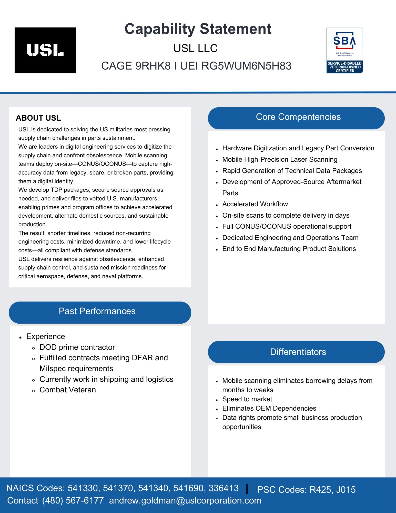

Capabilities

Capability Statement (text alternative)
The image above is USL's official Capability Statement. The text below is a full transcription provided for accessibility and is not a redesign of the original document.
USL LLC
CAGE 9RHK8 | UEI RG5WUM6N5H83
SBA Service-Disabled Veteran-Owned Small Business (SDVOSB)
About USL
USL is dedicated to solving the US military's most pressing challenges in parts sustainment.
We are leaders in digital engineering services to digitize the supply chain and confront obsolescence. Mobile scanning teams deploy on-site—CONUS/OCONUS—to capture high-accuracy data from legacy, spare, or broken parts, providing them a digital identity.
We develop TDP packages, secure source approvals as needed, and deliver files to vetted U.S. manufacturers, enabling primes and program offices to achieve accelerated development, alternate domestic sources, and sustainable production.
The result: shorter timelines, reduced non-recurring engineering costs, minimized downtime, and lower lifecycle costs—all compliant with defense standards.
USL delivers resilience against obsolescence, enhanced supply chain control, and sustained mission readiness for critical aerospace, defense, and naval platforms.
Core Competencies
- Hardware Digitization and Legacy Part Conversion
- Mobile High-Precision Laser Scanning
- Rapid Generation of Technical Data Packages
- Development of Approved-Source Aftermarket Parts
- Accelerated Workflow
- On-site scans to complete delivery in days
- Full CONUS/OCONUS operational support
- Dedicated Engineering and Operations Team
- End to End Manufacturing Product Solutions
Past Performances
- DOD prime contractor
- Fulfilled contracts meeting DFAR and Milspec requirements
- Currently work in shipping and logistics
- Combat Veteran
Differentiators
- Mobile scanning eliminates borrowing delays from months to weeks
- Speed to market
- Eliminates OEM Dependencies
- Data rights promote small business production opportunities
NAICS Codes
541330, 541370, 541340, 541690, 336413
PSC Codes
R425, J015
Contact
(480) 567-6177
andrew.goldman@uslcorporation.com